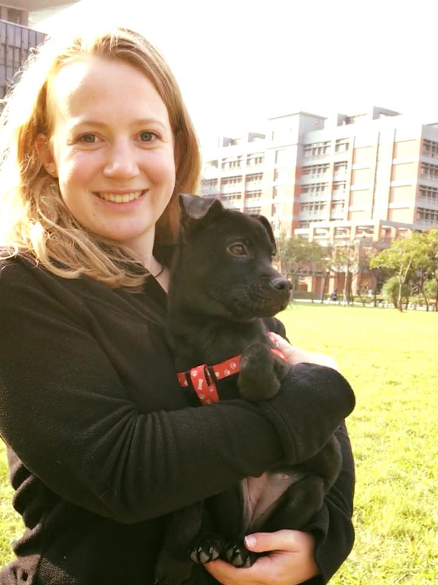

牠牠紀錄
來自他與牠的點點滴滴，讓你也不缺席那些最真實的互動與最真摯的感動。
TATA採訪 x 生命力新聞
2018/4/2
「浪」牠告訴你 尊重生命從教育開始
感謝
生命力新聞
的記者陳思媛、蔡湘翊對TATA的報導
TATA專案課程 x 國際扶輪3523地區青年服務團
2018/2/25

浪浪也要開學了！🏫
許多學校明天就要開學了，你是不是也和小編一樣不想回學校？
這學期，TATA也會到訪更多學校，讓浪浪們都能為同學們上課！
寒假的時候，我們沒有停下腳步，
希望能讓更多人，都能更認識浪浪，
讓更多人，都能關懷浪浪，
讓台灣可以成為亞洲第一個零棄養的國家！
這次的活動還要感謝❤
生命力新聞的記者採訪，之後的採訪再與大家分享；
也非常感謝位於新店的尾巴派對寵物生活館，借我們這溫馨的空間以及完善的設備，
讓浪浪能洗澡澡，有朝氣地出席課程！
photo by Jimmy Yang Photography
TATA專案課程 x 國立台北大學AIESEC
2018/1/12

浪浪也來做一下國際交流
聽了很多外國朋友分享了他們國家浪浪的狀況
讓TATA也一起為全世界的浪浪努力吧!!

TATA前進校園 x 新北市立板橋高級中學
2017/12/23

黃同學：「其實我以前很害怕狗狗，不敢接近牠們，但因為這次的課程，
讓我不害怕狗狗了，而且我覺得牠們真的好可愛 ❤️ 」
原本害怕狗狗的黃同學，卻在課後能夠擁抱狗狗以及餵牠們吃飼料。
也許從小我們沒有機會接觸狗狗，因而覺得狗狗很陌生，不敢靠近牠們，
希望能藉由我們的課程，讓更多大朋友與小朋友，都能認識狗狗。
photo by Jimmy Yang Photography
TATA前進校園 x 基隆市立中山高級中學
2017/12/8
浪浪與超有活力的體育班同學一起上課
看狗狗和同學一起在操場上奔跑的樣子實在是太青春了！！

photo by Jimmy Yang Photography
TATA專案課程 x 職人校園沙龍
2017/11/15
明明就報名數量有限的⋯結果最後居然湧入54位學員是怎樣！！！你們真的很熱血欸！！！???
希望大家今天的體驗課程玩得開心！過程中看到每一位學員們都很認真的參與，
也提了很多問題一起探討，關於流浪動物議題有你們一起關心更充滿了勇氣！
老話一句，
期待完整體驗式生命教育課程的朋友們，
可以留意粉專最新報名資訊。
想加入牠牠志工的夥伴直接私訊我們，
想團體報名的單位也有客製化課程歡迎直接聯繫我們~
最後但最重要的是，
今天參加課程的學員若有想幫浪浪寫故事跟繳交照片的話，我們非常期待收到你們的私訊喔~
好啦真的最後要說，
今天謝謝你們來！期待之後在課程中再見